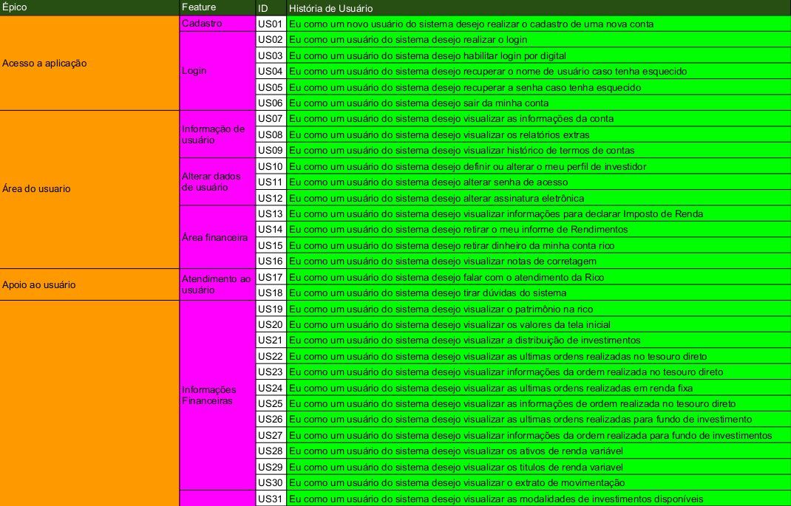

Backlog
Product Backlog
O Product Backlog é uma lista contendo todas as funcionalidades desejadas para um produto. O Product Backlog não precisa estar completo no início de um projeto. O conteúdo desta lista é definido pelo Product Owner. Pode-se começar com tudo aquilo que é mais óbvio em um primeiro momento. Com o tempo, o Product Backlog cresce e muda à medida que se aprende mais sobre o produto e seus usuários.
Histórias de usuário
Uma história de usuário é uma ferramenta usada no desenvolvimento de software Ágil para capturar uma descrição de um recurso de software da perspectiva do usuário final. A história do usuário descreve o tipo de usuário, o que eles querem e por quê. Uma história de usuário ajuda a criar uma descrição simplificada de um requisito e pode caber em estruturas Ágil como Scrum e Kanban.
Participantes
| Nome | Github |
|---|---|
| Pedro Henrique Queiroz Miranda | @pedroMiranda7410 |
| Daniel de Sousa Oliveira Melo Veras | @dansousamelo |
| Tiago Miguel Caetano da Silva | @tmcstiago |
| Lucas Medeiros Rosa | @medeiroslucas |
Backlog V1.0


Backlog V2.0
| Épico | Feature | ID | História de Usuário |
|---|---|---|---|
| Acesso a aplicação | Cadastro | US01 | Eu como um novo usuário do sistema desejo realizar o cadastro de uma nova conta |
| Login | US02 | Eu como um usuário do sistema desejo realizar o login | |
| US03 | Eu como um usuário do sistema desejo habilitar login por digital | ||
| US04 | Eu como um usuário do sistema desejo recuperar o nome de caso tenha esquecido | ||
| US05 | Eu como um usuário do sistema desejo recuperar a senha caso tenha esquecido | ||
| US06 | Eu como um usuário do sistema desejo sair da minha conta | ||
| Área do usuário | Informação do Usuário | US07 | Eu como um usuário do sistema desejo visualizar as informações da conta |
| US08 | Eu como um usuário do sistema desejo visualizar os relatórios extras | ||
| US09 | Eu como um usuário do sistema desejo visualizar histórico de termos de contas | ||
| Alterar dados de usuário | US010 | Eu como um usuário do sistema desejo definir ou alterar o meu perfil de investidos | |
| US11 | Eu como um usuário do sistema desejo alterar senha de acesso | ||
| US12 | Eu como um usuário do sistema desejo alterar assinatura eletrônica | ||
| Área Financeira | US013 | Eu como um usuário do sistema desejo visualizar informações para declarar Imposto de Renda | |
| US14 | Eu como um usuário do sistema desejo retirar o meu informe de Rendimentos | ||
| US15 | Eu como um usuário do sistema desejo retirar dinheiro da minha conta rico | ||
| US16 | Eu como um usuário do sistema desejo visualizar notas de corretagem | ||
| Apoio ao usuário | Atendimento ao usuário | US17 | Eu como um usuário do sistema desejo falar com o atendimento da Rico |
| US18 | Eu como um usuário do sistema desejo tirar dúvidas do sistema | ||
| Gerenciamento de Investimento | Informações Financeiras | US19 | Eu como um usuário do sistema desejo visualizar o patrimônio na rico |
| US20 | Eu como um usuário do sistema desejo visualizar os valores da tela inicial | ||
| US21 | Eu como um usuário do sistema desejo visualizar a distribuição de investimentos | ||
| US22 | Eu como um usuário do sistema desejo visualizar as ultimas ordens realizadas no tesouro direto | ||
| US23 | Eu como um usuário do sistema desejo visualizar informações da ordem realizada no tesouro direto | ||
| US24 | Eu como um usuário do sistema desejo visualizar as ultimas ordens realizadas em renda fixa | ||
| US25 | Eu como um usuário do sistema desejo visualizar as informações de ordem realizada no tesouro direto | ||
| US26 | Eu como um usuário do sistema desejo visualizar as ultimas ordens realizadas para fundo de investimento | ||
| US27 | Eu como um usuário do sistema desejo visualizar informações da ordem realizada para fundo de investimentos | ||
| US28 | Eu como um usuário do sistema desejo visualizar os ativos de renda variável | ||
| US29 | Eu como um usuário do sistema desejo visualizar os titulos de renda variavel | ||
| US30 | Eu como um usuário do sistema desejo visualizar o extrato de movimentação | ||
| Visualização de investimentos em grupos | US31 | Eu como um usuário do sistema desejo visualizar as modalidades de investimentos disponíveis | |
| US32 | Eu como um usuário do sistema desejo visualizar os investimentos para Tesouro Direto | ||
| US33 | Eu como um usuário do sistema desejo visualizar os títulos de Renda Fixa | ||
| US34 | Eu como um usuário do sistema desejo visualizar os fundos de investimento disponíveis | ||
| US35 | Eu como um usuário do sistema desejo visualizar os ativos de renda variável | ||
| Visualização de detalhes de títulos | US36 | Eu como um usuário do sistema desejo visualizar os detalhes de um Tesouro Direto | |
| US37 | Eu como um usuário do sistema desejo visualizar detalhes de um título de Renda Fixa | ||
| US38 | Eu como um usuário do sistema desejo visualizar detalhes de um fundo de investimento | ||
| US39 | Eu como um usuário do sistema desejo visualizar detalhes de ativos de renda variável | ||
| Filtrar investimentos | US40 | Eu como um usuário do sistema desejo procurar um título de Renda Fixa | |
| US41 | Eu como um usuário do sistema desejo filtrar títulos de Renda Fixa | ||
| US42 | Eu como um usuário do sistema desejo procurar fundos de investimentos | ||
| US43 | Eu como um usuário do sistema desejo filtrar fundo de investimentos disponiveis | ||
| Personalização para investimento | US44 | Eu como um usuário do sistema desejo gerenciar ativos de renda variável | |
| US45 | Eu como um usuário do sistema desejo adicionar ativos de renda variável | ||
| US46 | Eu como um usuário do sistema desejo remover ativos de lista de renda variável | ||
| US47 | Eu como um usuário do sistema desejo ativar/desativar operação de alavancada | ||
| Compra / venda de ativos | US48 | Eu como um usuário do sistema desejo realizar aplicação em um título do Tesouro Dieto | |
| US49 | Eu como um usuário do sistema desejo realizar aplicação em um título de Renda Fixa | ||
| US50 | Eu como um usuário do sistema desejo realizar aplicação em um fundo de investimentos | ||
| US51 | Eu como um usuário do sistema desejo comprar ativos de renda variável | ||
| US52 | Eu como um usuário do sistema desejo vender ativos de renda variável |
Histórico de revisões
| Data | Responsável | Versão | Alteração |
|---|---|---|---|
| 16/10/2019 | @pedroMiranda7410 | 1.0 | Adicionado itens da tabela de backlogs com histórias de usuários retirados da tabela excel |
| 17/10/2019 | @pedroMiranda7410 | 1.1 | Adicionado as US01 á US26 |
| 17/10/2019 | @dansousamelo | 1.2 | Adicionado as US27 á US52 |
| 17/10/2019 | @pedroMiranda7410 e @dansousamelo | 1.3 | Adicionado referências e descrição |
Referências
- EXAMPLE Mapping – Steering the conversation. [S. l.], 23 set. 2015. Disponível em: https://xebia.com/blog/example-mapping-steering-the-conversation/. Acesso em: 17 out. 2019.
- SERRANO, Maurício; SERRANO, Milene; Requisitos - Aula 15; Disponível em https://aprender.ead.unb.br/pluginfile.php/730382/mod_resource/content/1/Requisitos%20-%20Aula%2015a.pdf
- SERRANO, Maurício; SERRANO, Milene; Requisitos - Aula 17; Disponível em https://aprender.ead.unb.br/pluginfile.php/730386/mod_resource/content/1/Requisitos%20-%20Aula%20019a.pdf